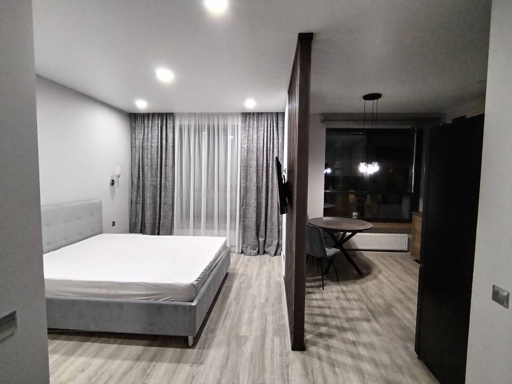

Wan 2.2
succeeded5.0 с1104 × 816alibaba/wan-2.2
Мой разбор
Ткань стабильна, но camera travel заметно больше заявленного micro-move; перегородка становится слишком крупной.
Четырнадцать локальных генераций для одного интерьерного кадра. Сначала сформируйте собственное мнение: мой разбор скрыт. Оценки и заметки сохраняются только в этом браузере.

Смысл кадра — зонирование. Сравните естественность ткани, амплитуду камеры, стабильность перегородки и мебели, а также читаемость спальни и обеденной зоны в финальном кадре.
Медленный сдвиг вправо с небольшим приближением. Шторы полностью неподвижны.
5.0 с1104 × 816alibaba/wan-2.2
Ткань стабильна, но camera travel заметно больше заявленного micro-move; перегородка становится слишком крупной.
5.0 с1662 × 1246audioalibaba/wan-2.7
Микро-dolly превращается в сильный проезд; перегородка частично перекрывает сравнение зон. Контракт не пройден по аудио и разрешению.
4.0 с1920 × 1080google/veo-3.1-lite
Небольшой чистый параллакс, обе зоны читаются, штора и архитектура стабильны.
Очень небольшой dolly вправо без приближения: мягкий старт, ровное скольжение и плавная остановка. Шторы неподвижны.
5.0 с1104 × 816alibaba/wan-2.2
Амплитуда стала значительно меньше исходного A; движение спокойное, перегородка и ткань стабильны.
5.0 с1662 × 1246audioalibaba/wan-2.7
Сдвиг мягче исходного A, но модель всё ещё усиливает camera travel. Transport снова вернул audio и нестандартное разрешение.
4.0 с1920 × 1080google/veo-3.1-lite
Veo фактически заморозил кадр: средняя межкадровая разница всего 0.13 против 1.74 у исходного A. Причина — одновременные ограничения starts still, tiny distance и полная неподвижность сцены.
A₃ — выбранный эталон: заметный непрерывный проезд с ровным темпом. A₄ оставлен как более сдержанная композиционная альтернатива.
4.0 с1920 × 1080motion 6.20google/veo-3.1-lite
Выбранный человеком эталон. Камера начинает движение сразу и идёт непрерывно с ровной скоростью: высокая амплитуда не воспринимается резкой, потому что в траектории нет пауз и рывков.
4.0 с1920 × 1080motion 1.08google/veo-3.1-lite
Более сдержанная альтернатива A₃: меньше travel, обе зоны дольше сохраняют исходные доли кадра. Использовать, только если важнее удержать композицию, чем получить выразительный проезд.
Минимальный параллакс; вторично двигается только нижний край полупрозрачной шторы.
5.0 с1104 × 816alibaba/wan-2.2
Самый сбалансированный Wan 2.2: обе зоны читаются, а штора не становится главным объектом.
5.0 с1662 × 1246audioalibaba/wan-2.7
Формулировки tiny и very small не удерживают амплитуду камеры; media contract снова не пройден.
4.0 с1920 × 1080google/veo-3.1-lite
Модель создаёт новую крупную штору на переднем плане, которая закрывает кровать.
Камера фиксирована; нижняя треть шторы делает одно низкоамплитудное движение.
5.0 с1104 × 816alibaba/wan-2.2
Самый безопасный, но почти статичный результат: микродвижение в основном проигнорировано.
5.0 с1662 × 1246audioalibaba/wan-2.7
Центральная часть тюля снова образует парус; дополнительно меняется свет за правым окном.
4.0 с1920 × 1080google/veo-3.1-lite
Движется всё полотно, а не нижняя треть; тюль снова открывается и меняет силуэт.
Оценки сохраняются в localStorage. Можно скачать JSON или скопировать короткое текстовое резюме и прислать его в чат.
Оценено 0 из 14